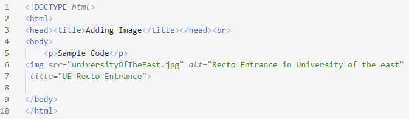

HTML IMAGE
Adding Image
- Use the </img> element to insert an image into the page.
- This is a placeholder element (which means there is no closing tag).
- It must have the following attributes: height, width, src, alt, title.
The SRC element allows you to specify the image's URL (Uniform Resource Locator). This reference might be absolute or relative.
The height and width attributes are used to indicate the size of the image.
The alt attribute gives you an opportunity to specify alternate text describing the image. Alternate text information is used when the user has images turned off and by screen-readers
the title attribute with the <img /> element to provide additional information about the image
| IMAGE FORMAT |
|---|
| PNG |
| JPG/PEG |
| GIF |
Example:
 Output: